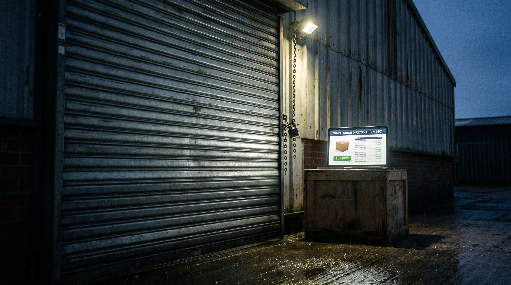

Et stroemsvigt. En noeglemedarbejder der er syg og ikke kan naes. Et IT-nedbrud der laaser WMS-systemet. En vandskade der goer lageret utilgaengeligt.
Ingen af disse scenarier er usandsynlige. Alle af dem kan ramme en webshop naar som helst. Og de fleste webshops har ikke et beredskab.
Her er hvad der faktisk sker, hvad det koster, og hvordan du bygger et minimumsberedskab paa en eftermiddag.
👉 SmartPack er cloud-baseret og tilgaengeligt overalt, selv naar det fysiske lager er utilgaengeligt. Se systemadgangen
Hvad sker time for time de foerste 3 dage
Time 1-4: Ordrer fortsaetter med at indgaa. Kunder forventer normal levering. Du har endnu ikke kommunikeret noget.
Time 4-24: De foerste kunder kontakter kundeservice for at sporge til deres ordre. Belastningen stiger. Du begynder at kommunikere forsinkelse.
Dag 2: Kunder der ikke har modtaget besked skriver Trustpilot-anmeldelser. Annulleringsraten stiger, saerligt for ordrer med hoej vaerdi eller tidsfristkritiske leveringer.
Dag 3: Ophobede ordrer skaber eftersleb. Naer lageret aabner igen, er der dobbelt til tredobbelt normal volumen at ekspedere. Fejlraten stiger under presset.
Den oekonomiske skade
For en webshop med 500 ordrer/maaned og 400 kr. gennemsnitlig ordrevaerdi:
- Tabt omsaetning i 3 dage: ca. 20.000 kr. (forudsat at kunder ikke venter)
- Annulleringer og refusioner: yderligere 5.000-15.000 kr.
- Ekstra kundeservicetid: 3.000-8.000 kr.
- Trustpilot-skade: vanskaelig at kvantificere, men reel og langsigtet
Minimumsberedskabet: 5 elementer
Du behoever ikke et avanceret beredskabsprogram. Du behoever fem basale elementer:
- Cloud-baseret WMS. Adgang til lageroverblik og ordreoprettelse fra ethvert sted med internet.
- Mindst 2 personer der kender systemet. Noeglemedarbejder-afhaengighed er den hyppigste aarsag til operationelle stop.
- En kommunikationsskabelon til kunder. En fardigt skrevet email der kan sendes paa 5 minutter.
- En procedure for midlertidig ordrepause. Skal du lukke for nye ordrer, er det bedre end at modtage ordrer du ikke kan ekspedere.
- En backup-aftale med alternativ lagerloesning. Selv en uformel aftale med et 3PL-lager om akut kapacitet reducerer risikoen markant.
Hvad SmartPack goer for dit beredskab
SmartPack er 100% cloud-baseret. Du kan se og haandtere din lagerstatus og ordreopgaver fra mobilen, hjemmefra eller fra et alternativt lager. Kombineret med automatiske kundebeskeder ved forsinkelse har du de vigtigste beredskabselementer built in.